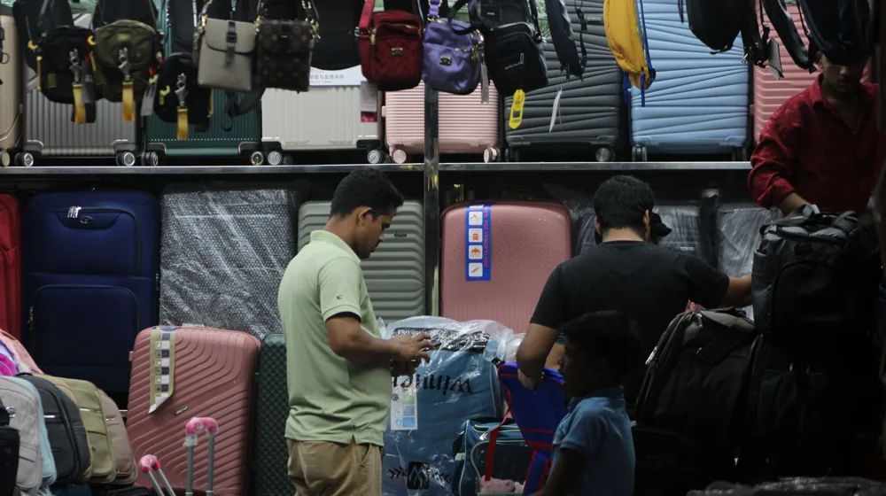

면세점 쇼핑, 온라인 vs 오프라인? 최저가 찾아 후회 없이 구매하는 법
사진: Atlantic Ambience / Pexels (무료 이미지, 출처 표기)
면세점 쇼핑을 앞두고 온라인과 오프라인 중 어디가 더 유리할지 고민이신가요?

해외여행의 꽃이라 불리는 면세점 쇼핑은 잘만 활용하면 상당한 경비를 아낄 수 있는 기회입니다. 하지만 다양한 면세점과 복잡한 할인 구조 앞에서 막막함을 느끼는 분들이 많습니다. 이 글에서는 온라인과 오프라인 면세점의 핵심 차이점을 비교하고, 각 상황에 맞춰 똑똑하게 최저가를 찾는 비법을 알려드립니다. 2026년 9월 기준 최신 정보를 바탕으로 현명한 면세점 쇼핑 전략을 세워보세요.
온라인 면세점 vs 오프라인 면세점, 핵심 차이점은?
면세점 쇼핑은 크게 온라인과 오프라인으로 나뉩니다. 각 채널은 고유의 장단점과 이용 방식을 가지고 있어 자신의 쇼핑 스타일에 맞춰 선택하는 것이 중요합니다. 다음 표를 통해 두 유형의 주요 특징을 비교하고, 어떤 점을 고려해야 할지 파악해 보세요.
온라인 면세점 쇼핑, 이것만 알면 성공
온라인 면세점은 시간적 여유를 가지고 저렴하게 쇼핑하고 싶은 분들에게 최적화된 채널입니다. 다음 팁들을 활용하면 더욱 효율적인 구매가 가능합니다.
- 사전 회원 가입 및 등급 혜택 활용: 대부분의 온라인 면세점은 회원 가입 시 기본 할인 쿠폰을 제공하며, 누적 구매 금액에 따라 VIP 등급으로 승격되어 추가 할인 혜택을 받을 수 있습니다. 여행 계획이 있다면 미리 가입해두는 것이 좋습니다.
- 적립금과 쿠폰 중복 적용: 온라인 면세점의 가장 큰 장점은 적립금, 제휴 할인 쿠폰, 앱 전용 쿠폰 등을 중복으로 적용하여 실제 구매가를 크게 낮출 수 있다는 점입니다. 결제 전 사용 가능한 모든 혜택을 꼼꼼히 확인하세요.
- 타임 세일 및 주말 특가 공략: 정기적으로 진행되는 타임 세일, 주말 특가, 특정 브랜드 할인 등 기간 한정 프로모션을 놓치지 마세요. 알림 설정을 해두면 인기 상품을 저렴하게 구매할 기회를 잡을 수 있습니다.
- 출국 정보 정확히 입력: 면세품 인도 시 여권 정보와 출국 항공편 정보가 일치해야 합니다. 구매 시 정확한 정보를 입력하고, 변경 사항이 있다면 사전에 고객센터에 연락하여 수정해야 차질 없이 면세품을 수령할 수 있습니다.
오프라인 면세점, 현장에서 누리는 혜택 활용법
실물을 직접 확인하고 싶거나, 출국 직전 긴급하게 구매해야 할 때 오프라인 면세점은 좋은 선택입니다. 오프라인 면세점을 이용할 때는 다음 팁들을 기억하세요.
- 시내 면세점 vs 공항 면세점: 시내 면세점은 공항보다 규모가 크고 다양한 브랜드를 취급하며, 내국인의 경우 구매 즉시 일부 품목을 수령할 수 있다는 장점이 있습니다(수령 후 출국 시 휴대). 공항 면세점은 출국 게이트 근처에 있어 편리하지만, 품목이 시내 면세점보다 한정적일 수 있습니다. 본인의 동선과 구매 품목에 따라 선택하세요.
- 즉시 환급 시스템 이용: 일부 오프라인 면세점에서는 외국인을 대상으로 구매 즉시 세금을 환급해주는 시스템을 운영합니다. 내국인의 경우에도 특정 브랜드에서 프로모션 형태로 제공하는 경우가 있으니, 방문 전 확인하는 것이 좋습니다.
- 제휴 할인 및 VIP 라운지 활용: 신용카드, 통신사, 항공사 등과 제휴하여 할인 혜택을 제공하는 경우가 많습니다. 또한, 고액 구매 고객을 위한 VIP 라운지에서는 음료나 휴식 공간을 제공하므로, 필요하다면 활용해 보세요.
- 출국 전 구매 시간 고려: 공항 면세점의 경우, 탑승 시간 임박하여 구매하면 혼잡이나 시간 부족으로 원하는 품목을 놓치거나 탑승에 지장을 줄 수 있습니다. 충분한 시간을 가지고 둘러보는 것이 좋습니다.
면세점 쇼핑 시 놓치지 말아야 할 할인 팁 & 적립금 활용
온라인이든 오프라인이든 면세점 쇼핑의 핵심은 최대한 많은 할인을 끌어내는 것입니다. 다음은 면세점 공통으로 적용할 수 있는 할인 전략입니다.
- 제휴 카드 및 통신사 할인: 특정 신용카드나 통신사 멤버십 고객에게 추가 할인이나 적립 혜택을 제공하는 경우가 많습니다. 본인이 소지한 카드나 통신사 제휴 여부를 꼭 확인해 보세요.
- 청첩장 할인/생일 쿠폰: 결혼을 앞두고 있거나 생일인 경우, 관련 증빙 서류를 제출하면 추가 할인이나 적립금을 받을 수 있는 프로모션이 종종 있습니다. 2026년 9월 기준, 많은 면세점에서 이러한 혜택을 제공합니다.
- 포인트 전환 및 제휴 포인트 사용: 항공사 마일리지, 카드사 포인트, 특정 제휴사 포인트 등을 면세점 적립금으로 전환하여 사용할 수 있습니다. 잠자고 있는 포인트를 면세점 쇼핑에 활용하면 큰 도움이 됩니다.
- 환율 변동 주시: 해외 결제가 이루어지는 면세품 구매는 환율에 따라 가격이 달라질 수 있습니다. 환율이 낮을 때 구매하면 유리하므로, 구매 전 환율 동향을 확인하는 것도 좋은 방법입니다.
알아두면 유용한 면세 한도 및 구매 제한
면세점 쇼핑 시 가장 중요한 것은 바로 면세 한도와 구매 제한 규정을 숙지하는 것입니다. 이를 어기면 세관 신고 대상이 되거나 불이익을 받을 수 있습니다. 대한민국 관세청에 따르면, 2026년 9월 기준으로 개인당 기본 면세 한도는 다음과 같습니다.
- 기본 면세 한도: 미화 800달러 (해외에서 구매한 물품 합산)
- 별도 면세 한도:
- 주류: 2병 (전체 용량 2리터 이하, 미화 400달러 이하)
- 담배: 200개비 (1보루) 또는 궐련형 전자담배 스틱 200개비 등
- 향수: 60ml
이 한도를 초과하여 구매한 물품은 입국 시 세관에 반드시 자진 신고해야 합니다. 자진 신고 시 세금 감면 혜택을 받을 수 있으니, 솔직하게 신고하는 것이 유리합니다. 또한, 농산물이나 특정 품목은 검역 대상이 될 수 있으므로 사전에 확인하는 것이 좋습니다. 정확한 사항은 대한민국 관세청 홈페이지에서 다시 확인하시길 권장합니다.
면세점 쇼핑, 마지막 체크리스트
성공적인 면세점 쇼핑을 위해 출국 전 반드시 다음 사항들을 확인하세요.
- 유효한 여권 및 항공권/전자항공권: 면세품 구매 및 수령 시 반드시 필요합니다.
- 결제 수단 준비: 사용할 신용카드, 간편결제 앱, 현금 등을 미리 준비합니다.
- 면세점 앱 설치 및 회원 가입: 온라인 면세점을 이용할 경우 필수입니다.
- 면세 한도 숙지: 구매하려는 물품의 가격을 확인하여 한도를 넘지 않도록 주의합니다.
- 면세품 인도장 위치 확인: 출국하는 공항의 면세품 인도장 위치를 미리 파악해두세요.
- 충분한 시간 확보: 여유로운 쇼핑과 면세품 수령을 위해 공항 도착 시간을 넉넉하게 잡습니다.
🔗 이 글도 함께 보면 좋아요: 전통주 선물세트, 실패 없이 고르는 법: 후기부터 주의사항까지 완벽 정리
관련 추천 상품
해외여행 필수템, 면세점 화장품 관련 인기 상품 보러가기
이 포스팅은 쿠팡 파트너스 활동의 일환으로, 이에 따른 일정액의 수수료를 제공받습니다.